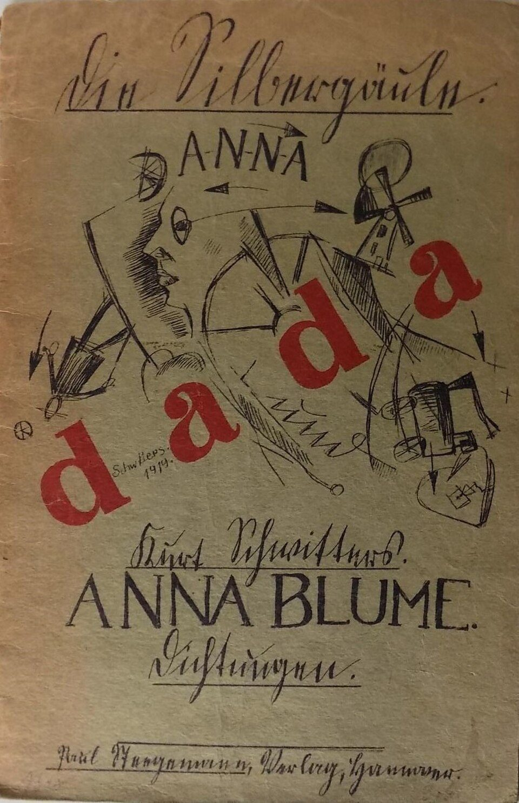

References / Book / 442
Kurt Schwitters, Anna Blume. Dichtungen, 1919 (cover)
Schwitters’s first book of poems has a cover he drew himself: script, letter-spaced capitals, a scattered drawing, and four large red letters that spell dada.
- Source
- Wikimedia Commons: Kurt Schwitters, Anna Blume. Dichtungen, 1919, first edition
- Creator
- Kurt Schwitters
- Made
- 1919
- Style
- Dada (agent-proposed, not yet reviewed by a person)
- Moods
- Irreverent, chaotic, playful
- Evidence
- Inspected the Commons photograph of a first-edition copy offered on ZVAB (Commons, 843 × 1302 px original; the stored 960 px Commons thumbnail is slightly upscaled). The copy is a dealer’s copy; its owner is not known.
- Reviewed
- Rights
- Open license, stored. License: public domain. Rights policy

Context
Commons records the image as Anna Blume. Dichtungen, Paul Steegemann Verlag, Hannover, 1919, first edition, in the series Die Silbergäule, volumes 39–40, tagged PD-Art (PD-old-auto-1923, death year 1948). Commons.
Wikipedia says that the publication of the poem “An Anna Blume” in August 1919, with his first one-man show at Der Sturm, made Schwitters a well-known artist by the end of that year. Wikipedia: Kurt Schwitters. He later printed it again in Merz 1.
Observed
- The cover is printed in black and red on grey-green paper.
- The series title “Die Silbergäule.” is in a large German script at the top, underlined.
- “A-N-N-A” is letter-spaced in thin capitals with hyphens. “ANNA BLUME.” is in thin roman capitals in the lower third, and “Kurt Schwitters.” and “Dichtungen.” are in script, each underlined.
- Four large red lowercase serif letters, “d a d a”, climb diagonally across the middle from lower left to upper right.
- A loose pen drawing fills the middle: a face in profile, a large wheel, a windmill, a small figure, a heart, a cart, arrows, and small crosses, signed “Schwitters 1919”.
- The publisher’s line “Paul Steegemann, Verlag, Hannover.” is in script at the bottom.
Why it belongs
The red “dada” letters do the same job as the giant red letters on the 1922 soirée program: one word in the accent color cuts across everything else. The rest of the cover is closer to expressionist drawing.
Borrow
Run one word in large red letters diagonally across a black drawing, so the accent sets the direction.
Mix script, letter-spaced capitals, and roman capitals for title, author, and series.
Measured
Machine-extracted by tools/image-traits.py on . Full measurement.
- Mean chroma
- 0.18
- Palette
- #76694a 37%
- #85785c 15%
- #68593a 11%
- #947351 11%
- #918568 7%
- #6f221a 3%
- #876744 3%
- #524431 3%

